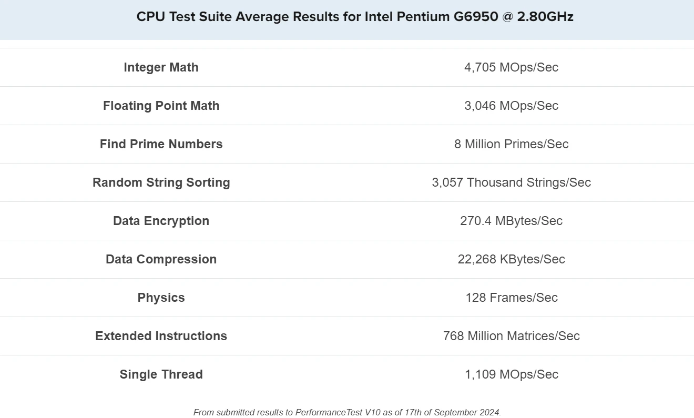

01Contexte
Tout juste embauché à la direction des systèmes d'information de CentreCall, je dois améliorer les performances des anciens serveurs de l'entreprise. La démarche se fait en trois temps : inventorier les composants d'un serveur en le démontant, évaluer leurs performances, puis proposer de nouveaux composants là où c'est utile.
02Inventaire des composants
| Composant | Relevé |
|---|---|
| Serveur | HP ProLiant ML110 G6 |
| Processeur | Intel Pentium G6950 (2,80 GHz, 73 W, 3 Mo de cache) |
| Carte vidéo | Puce Matrox G200eH intégrée, sortie VGA |
| Disque dur | Un disque dur Western Digital GB0250EAFYK de 250 Go |
| Carte réseau | Une carte Broadcom BCM5723 Gigabit Ethernet, intégrée à la carte mère |
| Mémoire vive | Une barrette Dane-Elec de 2 Go, DDR3 1333 MHz |
| Carte mère | HP ProLiant ML110 G6 (573944-001) |
| Connectique externe | Ports USB 2.0, VGA, DB9, DIN et deux ports Ethernet |
| Système d'exploitation | Ubuntu 16.04 |
Après remontage, le serveur est fonctionnel.
03Évaluation des performances
| Composant | Évaluation |
|---|---|
| Serveur | Commercialisé en 2010 |
| Processeur | Commercialisé en janvier 2010 : 2 cœurs à 2,8 GHz |
| Carte vidéo | Puce Matrox G200eH, commercialisée vers 2009 |
| Disque dur | Commercialisé en 2009 : 7 200 tr/min, environ 100 à 120 Mo/s en lecture et 90 à 110 Mo/s en écriture |
| Carte réseau | Gigabit Ethernet (10/100/1000 Mb/s), soit 1 Gb/s |
| Mémoire vive | Commercialisée en 2009 : 1333 MHz ; pas de benchmark disponible pour ce modèle |
| Carte mère | Commercialisée en 2010 : disques SATA II, débit maximal de 3 Gbit/s |
| Entrées et sorties | USB 2.0 : 60 Mo/s théoriques au maximum ; VGA : jusqu'à 1600 × 1200 à 60 Hz |


04Évolutions proposées
- Mémoire vive : passer à 4 barrettes de 4 Go de DDR3 1333 MHz, pour les données actives.
- Un SSD de 128 Go réservé au système, pour accélérer le démarrage et le lancement des applications.
- Quatre disques de 2 To en RAID 5 logiciel, pour garantir la redondance des données.
- Une alimentation de 500 W certifiée Gold, pour alimenter les nouveaux composants.
- Une carte réseau 10 Gb/s, pour offrir une meilleure bande passante aux employés.
- Un processeur Intel Xeon.